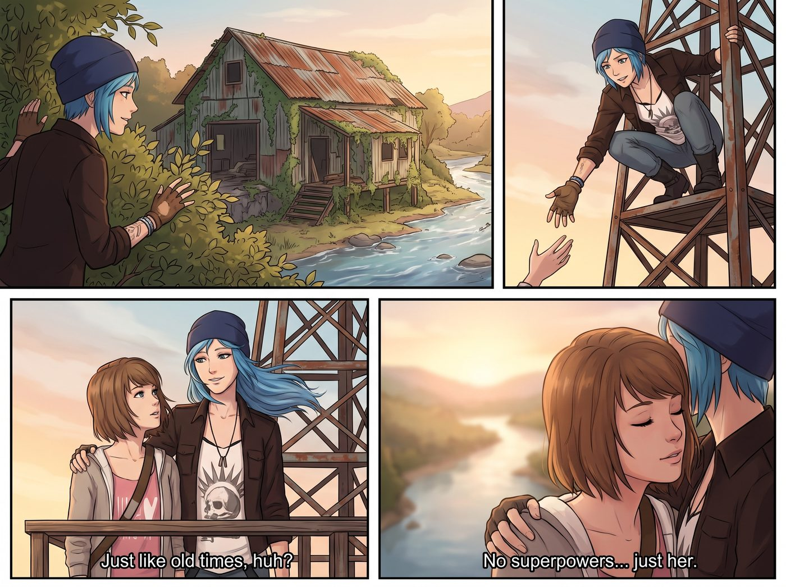

被無人機打斷的初吻復刻

這是一個完美的、屬於阿卡迪亞灣風格的黃昏。
為了逃離二號車廂裡那些震耳欲聾的重金屬銲接聲、令人窒息的跨國做空報表，以及隨時可能引來聯邦特工的核反應爐，Chloe 和 Max 決定給自己放個假。
她們沿著一條長滿雜草的廢棄鐵軌，徒步深入了奧林匹亞半島的森林。陽光透過巨大的花旗松枝葉灑下來，形成了一道道金色的光柱。Max 抱著她的拍立得相機，一路上拍下了生鏽的鐵軌釘、長滿青苔的倒木，以及 Chloe 走在前面時那不羈的背影。
這一切都太懷舊了，彷彿她們又回到了那個久違的、無憂無慮的夏天，在阿卡迪亞灣的鐵軌邊漫無目的地探險。
一、塔頂的浪漫
「到了，Maxine。」
Chloe 撥開最後一片灌木叢，眼前出現了一座廢棄在河谷邊的舊木材加工廠。生鏽的波浪板屋頂、爬滿藤蔓的巨型齒輪，散發著一種頹廢的廢墟美學。
Chloe 熟練地攀上一座生鏽的鐵塔，然後轉過身，朝著 Max 伸出手。當 Max 握住 Chloe 滿是厚繭的手，被一把拉上塔頂的木製平台時，兩人的距離瞬間拉近。太平洋的微風吹拂著 Chloe 的藍髮，她看著 Max，嘴角勾起一抹溫柔的壞笑。
「就像回到過去一樣，對吧？」Chloe 輕聲說，手臂自然地環住了 Max 的肩膀。
Max 感覺自己的心跳漏了一拍。沒有超能力，沒有拯救世界的重擔，也沒有資本市場的爾虞我詐。只有她，Chloe，還有一場屬於兩個人的廢土浪漫。Max 閉上眼睛，微微踮起腳尖，氣氛在這一刻達到了獨立民謠MV的最高潮。
就在兩人的嘴唇即將碰觸的關鍵零點零一秒——
「嗡嗡嗡嗡嗡——」
二、不速之客
一陣極度破壞氣氛的機械旋翼聲從塔底升起。一個通體啞光黑、掛載著軍用級光學鏡頭與雷射測距儀的四軸無人機，幽靈般地升到了她們面前。無人機的雲台轉動了一下，紅色的指示燈對準了正在接吻預備狀態的兩人。
隨後，無人機底部的小型擴音器裡，傳來了實習生那軟糯、甜美，卻讓人瞬間性慾與浪漫值雙雙歸零的聲音。
「Max 學姐，Price 學姐，黃昏好。請原諒我的突然介入。」
Chloe 嚇得差點從塔頂掉下去，她憤怒地朝著無人機比了一個國際友好手勢：「Lily！！妳這個偷窺狂！我們在約會！妳為什麼要用軍用無人機跟蹤我們？！」
「Price 學姐，這不是跟蹤，這是高價值資產的場外安全覆蓋。我透過您手機的定位發現，你們偏離了安全路線，進入了一個極度敏感的區域。」
「敏感區域？這裡就是個破木材廠！」Chloe 氣急敗壞。
「在地圖上，它是一座廢棄木材廠。但在環保署的資料庫裡，它是西雅圖一家大型地產開發商名下的三級潛在超級基金污染地。」Lily 的語氣瞬間切換到了前線指揮官模式，「學姐們，既然妳們已經成功滲透到了敵後制高點，我們不妨將這場浪漫的散步，升級為一次前線合規偵察與證據採集任務。」
Max 痛苦地捂住臉：「Lily，我只是想拍幾張懷舊的風景照，我不想參與妳的企業間諜活動……」
三、四十萬美金的誘惑
「Max 學姐，請將您的視線向左下方偏移四十五度。」Lily 溫柔地引導著，「您看到河谷邊那些被防水布半掩蓋的藍色鐵桶了嗎？」
Max 順著無人機發出的雷射指示點看去，確實有幾個鏽跡斑斑的鐵桶，正有不明的黏稠液體滲入河水中。
「那家開發商為了逃避每年兩百萬美金的廢棄物處理費，將有毒的木材防腐劑非法掩埋在那裡。」Lily 的聲音裡透著一種狂熱，「如果 Max 學姐能用您手裡那台具備不可篡改物理特性的底片相機，拍下那些鐵桶的清晰特寫，我們就能以此作為呈堂證供，向環保署申請吹哨人獎勵。」
「我才不管什麼獎勵！我們現在就要下去親熱！」Chloe 暴躁地想去砸無人機。
「獎金比例是罰款總額的百分之十五到三十。」Lily 幽幽地補充，「保守估計，我們能拿到大約四十萬美金的免稅支票。這筆錢，足夠 Price 學姐買一輛全新的頂配皮卡，並改裝全套防彈裝甲；同時，也足夠供應 Max 學姐未來十五年揮霍最頂級的絕版寶麗來相紙。」
塔頂上的風突然安靜了下來。
Chloe 舉在半空中的手僵住了。她看了一眼 Max，Max 也看了一眼她。在青春浪漫的初吻復刻與十五年的免費底片加一輛武裝皮卡之間，兩位廢土文青的靈魂經歷了長達三秒鐘的劇烈掙扎。
「……Lily，相機的焦距有點不夠。」Max 默默地舉起了相機，語氣中帶著一種向資本主義低頭的悲壯，「妳的無人機能飛下去幫我打個補光燈嗎？」
「非常樂意效勞，Max 探員。」無人機發出了一聲愉悅的蜂鳴，迅速俯衝向河谷。
四、戰術偵察行動
十分鐘後，這場原本充滿了獨立遊戲浪漫氛圍的小冒險，徹底變成了一場海豹突擊隊級別的聯合偵察行動。
Chloe 趴在生鏽的鐵欄杆上，用望遠鏡充當觀測手：「十一點鐘方向，風速三級！那桶化學廢料正在漏水！Max，準備射擊……我是說，準備按下快門！」
「收到！正在調整光圈！」Max 熟練地轉動著鏡頭，在無人機的探照燈輔助下，精準地捕捉到了開發商犯罪的物理證據。
當兩人拿著那幾張價值四十萬美金的吹哨人底片回到二號車廂時，天已經完全黑了。
Victoria 坐在沙發上，看著滿身泥濘但眼神狂熱的兩人，滿意地點點頭：「幹得好，女孩們。我已經讓 Lily 把律師函草稿寫好了，明天一早我們就去合法敲詐……我是說，維護生態環境。」
Kate 則端著熱可可走過來，溫柔地幫 Max 擦去臉上的灰塵：「Max，Chloe，妳們為了保護森林和河水裡的魚兒，特地去進行了這麼危險的偵察任務，真是兩位充滿愛心與勇氣的環保小英雄呢。」
Max 捧著熱可可，看著旁邊正興奮地在平板上挑選皮卡車改裝配件的 Chloe，無奈地嘆了口氣。她們確實找回了阿卡迪亞灣時期的冒險刺激感，但只要這個車廂裡還住著一個行政黑魔法師，她們的浪漫故事，就永遠會以發財和合法埋葬資本家作為最終大結局。